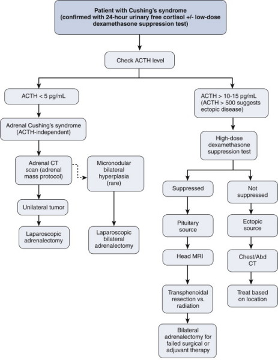

Cushing's Syndrome
DEFINITION
Hyperadrenalism.
D E A B M I M
EPIDEMIOLOGY
Age:
Most common in 25-45 year olds.
Gender:
Females (5:1).
Ectopic Cushing's is more common in males.
D E A B M I M
AETIOLOGY
Four possible sources of excess:
Tumour
1. Pituitary
tumour producing ACTH
- "Cushing's disease"
- >50% of endogenous cases.
- these are usually small and do not produce a mass effect, and have
basophilic or chromophobe cells.
- in many cases there is corticotroph cell hyperplasia without
discrete adenoma.
- in some excess CRF release may also be possible.
2.
Adrenal
tumour producing cortisol
- "ACTH- independent or adrenal Cushing's"
- 15-30% of endogenous cases.
- adenomas = carcinomas in adults; more carcinomas in children.
- rest of gland undergoes atrophy
3. Ectopic ACTH production
- e.g. small cell lung carcinoma,
carcinoids, medullary carcinoma of thyroid, islets of pancreas.
- often a downhill course.
- rarely there may be auto-antibodies to ACTH receptors like in
Grave's Disease.
Iatrogenic
4.
Exogenous corticosteroids
- in clinical practice this is most common.
Pseudo-Cushing's
With stress, illness, alcoholism or depression.
CRF is elevated, but not overnight.
D E A B M I M
BIOLOGICAL BEHAVIOUR
Pathophysiology
CRH released from the hypothalamus
stimulates ACTH secretion from the anterior pituitary gland.
This in turn results in cortisol production from the
adrenal gland.
The system is modulated by negative
feedback inhibition by cortisol of both CRH and ACT secretion.
Cushing's
disease:
-
Excess
ACTH is secreted from a pituitary corticotroph adenoma.
-
Cortisol
levels are high
-
CRH levels
are low due to negative feedback by cortisol on the hypothalamus
Cortisol
producing adrenal tumour:
-
Cortisol
levels are high
-
CRH and
ACTH levels are low due to negative feedback of cortisol on the
hypothalamus and pituitary
Ectopic
ACTH production:
-
ACTH and
cortisol levels are high
-
CRH is low
due to negative feedback on the hypothalamus.
-
Pituitary
production of ACTH is also suppressed.
Pseudo-Cushing's
syndrome:
-
Central
output increases CRH production resulting in high ACTH and
hypercortisolism.
Pathology
Pituitary
Granular cytoplasm changed to homogenous, lightly basophilic due to
intermediate keratin-filament build-up.
Adrenals
Either atropy, show diffuse hyperplasia, nodular hyperplasia (same
but in nodules), or tumour depending on type.
Adenomas are like zona fasculata cells, while carcinomas are larger,
unencapsulated and anaplastic, frequently greater than 200-300g.
- both have adjacent atrophic cortex.
D E A B M I M
MANIFESTATIONS
Symptoms
CVS
-
Hypertension
Endocrine
-
impaired glucose
tolerance/diabetes mellitus
- weight gain
- hirsuitism, menstrual abnormalities
Mental
- mood
swings
- even psychosis
Skin
-
Thin skin, easy
bruising
-
Striae
-
Acne, hirsutism
(due to increased adrenal androgens)
-
Round face
Musculoskeletal
-
Fractures (due to
osteoporosis)
-
Weakness getting
out of chairs (proximal myopathy, esp of type II myofibers)
Psychological
-
Easily irritated,
depression
-
Hypomania
-
Psychosis
-
Lethargy
Genitourinary
-
Amenorrhoea
-
Infertility
-
Decreased libido
(all due to increased adrenal androgens)
Immunes
- Increased infection risk.
Signs
General observation
-
Truncal obesity
with thin limbs
-
Cervical fat pad
Vitals
-
Hypertension
Hand/Arms
-
Thin skin &
striae and bruising
-
Proximal muscle
wasting
Face
-
Moon-shaped facies
-
Increased colour of
face/plethora
-
Acne, greasy skin,
hirsutism
Chest
-
Axillary striae
Abdomen
-
Striae
Neuro
- Proximal myopathy
D E A B M I M
INVESTIGATIONS
Urine analysis
Elevated urinary free cortisol (good
screening test, 24 hrs)
--> most sensitive and specific initial test
Plasma cortisol
High plasma cortisol levels without usual 24hr
variations.
Plasma ACTH
Elevated in Cushing's disease (ACTH producing
pituitary adenoma) and with ectopic ACTH production.
Low with an adrenal cortisol producing tumour.
Dexamethasone suppression test
Measure urinary secretion of
17-hydroxycorticosteroids as marker of endogenous cortisol
production and hence ACTH suppression.
3
patterns:
i) pituitary problem: ACTH elevated, only suppressed with very
high levels of dex.
ii) ectopic problem: ACTH elevated, completely insensitive to dex.
iii) adrenal tumour: ACTH low anyway, completely insensitive to
dex.

Insulin stress test
Insulin-induced hypoglycaemia usually results in a
rise of plasma cortisol of at least 220nmol/L.
In Cushing's syndrome the stress response to hypoglycaemia
is suppressed
FBC
Polycythaemia
Electrolytes
Hypokalaemia and hypernatremia may be present due to
the mild mineralocorticoid action of cortisol
Blood glucose
Elevated due to anti-insulin effect of cortisol
Imaging
Adrenal CT
Pituitary CT/MRI
D E A B M I M
MANAGEMENT
Medical
Block steroid synthesis
Ketoconazole (600-1200 mg daily) cytochrome P-450 inhibitors
Preop
Need stress steroids, usually 100mg IV hydrocortisone then
100mg further every 6h.
--> gradually transitioned to oral steroids (tapered when
ACTH-stimulation test normalizes and other gland no longer
suppressed).
Operative
If adrenal
adenoma, lap adrenalectomy
If adrenal carcinoma, usually require an open approach; en bloc
resection using a subcostal or midline incision.
Occasionally, patients with Pituitary Cushing's may be referred
for bilateral adrenalectomy for control.
D E A B M I M
REFERENCES